I recently came across a very interesting use-case of computer vision and AI.
Runners Need is a UK based sports shoe brand. They offer automated gait analysis using computer vision before they sell you a customized shoe.
Gait analysis is a method for identifying biomechanical abnormalities in the way in which you walk or run. A video analytics system assesses the way in which your foot strikes the floor, and determine whether your foot rolls inwards (pronates), doesn’t roll inwards enough (overpronates/supinates) or stays neutral. It shows your body’s way of distributing impact. A lot of people overpronate i.e. as the foot is planted on the floor, it rolls inward excessively, transferring weight to the inner edge instead of centering it on the ball of the foot.
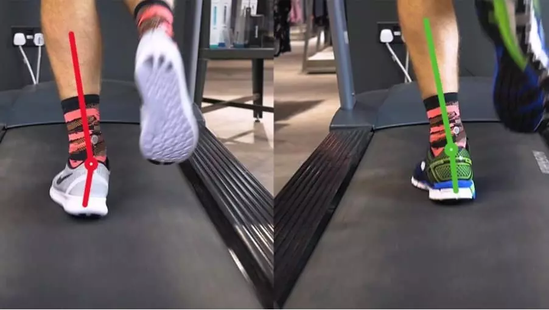
First, the user is asked to run on a treadmill with a neutral shoe which is watched by a video analytics system for 20 seconds. Based on this, the system determines your gait and recommends a suitable shoe. This system uses a computer vision technique called Human pose estimation.
In today’s post, we will learn about deep learning based human pose estimation using open sourced OpenPose library. OpenPose is a library for real-time multi-person keypoint detection and multi-threading written in C++ with python wrapper available. OpenPose won the 2016 coco keypoint challenge . OpenCV has integrated OpenPose in its new Deep Neural Network(DNN) module. This would mean that you would need OpenCV version 3.4.1 or above to run this code. We shall also share the complete code to run human pose estimation in OpenCV.
Human pose estimation:
The problem of human pose estimation can be defined as the computer vision techniques that predict the location of various human keypoints(joints and landmarks) such as elbows, knees, neck, shoulder, hips, chest etc.
Deep Learning based Human Pose estimation
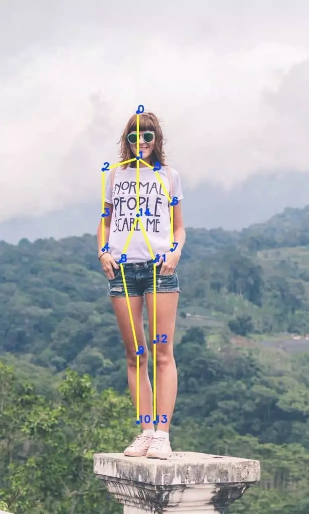
It’s a very challenging problem due to various factors such as small and hardly visible parts, occlusions and huge variability in articulations. The figure below shows the challenges:
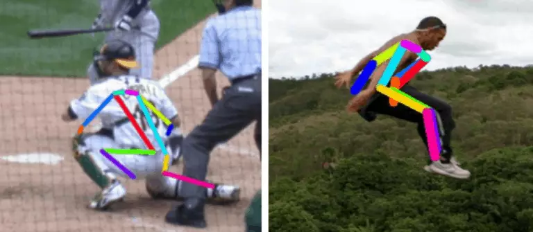
challenge human pose estimation
These images have joints in various articulations. Also, some of the joints are not visible. For example, in the left image, we can predict the arms only because we understand the context and can articulate the motion and position of the person.
OpenPose:
The openPose project from Carnegie Mellon University is one of the most accurate methods for human pose estimation. This convolutional neural network based approach attacks the problem using a multi-stage classifier where each stage improves the results of the previous one.
The first stage takes the input image and predicts the possible locations of each keypoint in the image with a confidence score(called the confidence map).
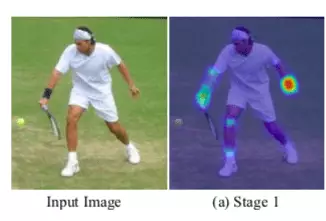
The first stage takes the input image and generates a prediction for all the joints. In this image, we show the prediction after the first stage for the right elbow. The highlighted part has the high probability of it being the right elbow.
The first stage takes the input image and generates a confidence map for all the keypoints. In this image, we show the confidence map after the first stage for the right elbow. The highlighted part has a high probability of it being the right elbow.
Each subsequent stage takes not only the image data but also the confidence map of the previous stage to use the context of the nearby area from the previous stage. This improves the prediction after each step, i.e. the confidence map is more accurate after passing through all 4 stages.
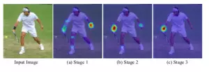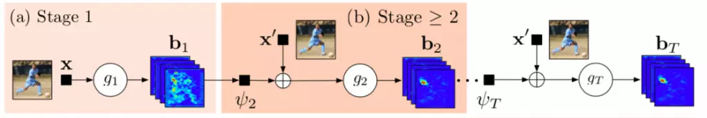
Deep learning based human pose estimation
Confidence map is good for single person pose estimation. However, the authors tried to build a solution for a general multi-person human pose estimation. Multi-person human pose estimation has additional many challenges such as an unknown number of people in the image, occlusion, variation in people scale. Using confidence, you can only generate all the key points as shown in the image below:
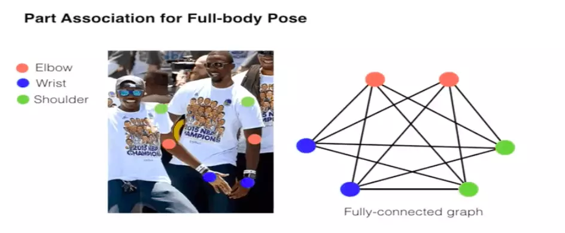
Pose estimation using deep learning
In multi-person pose estimation, overlapping body parts present the problem of uniquely identifying the limbs of each person.
So, the authors introduced the idea of part affinity maps. It uses the fact that certain joints are attached via limbs so another cnn branch is introduced which predicts 2D vector fields called part affinity maps(PAFs). PAFs encodes the location and orientation of the limbs.
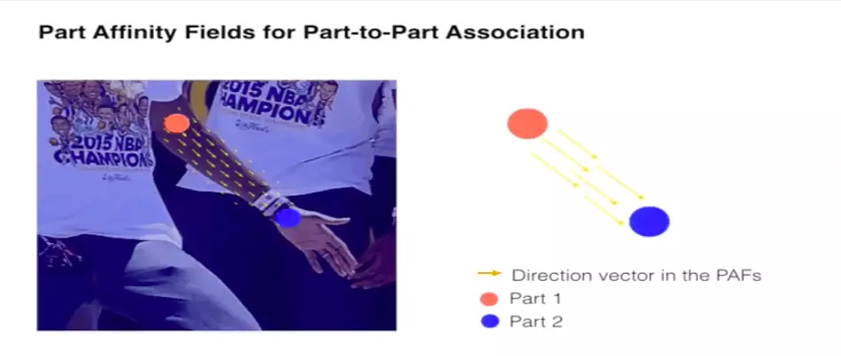
product affinity maps for human pose estimation
Later we can use the direction of the part affinity maps to predict human poses accurately in multiple people pose estimation problem. Now, in the final step, we can just connect these points using greedy inference to generate the pose keypoints for all the people in the image. The connection for one type of human limbs is determined first and then this is repeated for other types of limbs.
Human pose estimation using OpenPose
One type of limbs are connected first and then this is repeated for other kinds of limbs.
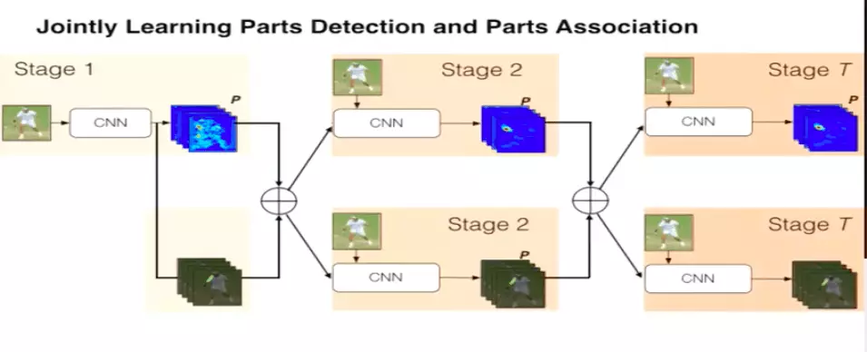
So, we use two branch convolutional neural network architecture.
two branch cnn architecture for human pose estimation
More specifically:
So, In summary, there are three steps:
Keypoints localization: One branch of the network is responsible for predicting all the keypoints with a confidence score. This is called confidence Map.
Part Affinity Fields: Another branch of the network predicts a 2D vector field that predicts the keypoints association data.
Greedy Inference: Now, we connect all the keypoints using greedy inference.
Running Single Person Pose estimation code in OpenCV:
In today’s post, we would only run the single person pose estimation using OpenCV. We would just be showing the confidence maps now to show the keypoints. In order to keep this post simple, we shall be showing how to connect multiple person keypoints using Pose affinity maps in a separate post next week. We would be using the pretrained model trained by the OpenPose team using Caffe on MPI dataset. This dataset has 15 keypoints to identify various points in human body.
"Head": 0, "Neck": 1, "RShoulder": 2, "RElbow": 3, "RWrist": 4,
"LShoulder": 5, "LElbow": 6, "LWrist": 7, "RHip": 8, "RKnee": 9,
"RAnkle": 10, "LHip": 11, "LKnee": 12, "LAnkle": 13, "Chest": 14,
"Background": 15
We also define the pose pairs which define the limbs. This is used to create the limbs which connect the keypoints and Pose affinity maps are used to predict the limbs.
POSE_PAIRS = [ ["Head", "Neck"], ["Neck", "RShoulder"], ["RShoulder", "RElbow"],
["RElbow", "RWrist"], ["Neck", "LShoulder"], ["LShoulder", "LElbow"],
["LElbow", "LWrist"], ["Neck", "Chest"], ["Chest", "RHip"], ["RHip", "RKnee"],
["RKnee", "RAnkle"], ["Chest", "LHip"], ["LHip", "LKnee"], ["LKnee", "LAnkle"] ]
Here is how we can download the models:
OPENPOSE_URL="http://posefs1.perception.cs.cmu.edu/OpenPose/models/"
POSE_FOLDER="pose/"
MPI_FOLDER=${POSE_FOLDER}"mpi/"
MPI_MODEL=${MPI_FOLDER}"pose_iter_160000.caffemodel"
wget -c ${OPENPOSE_URL}${MPI_MODEL} -P ${MPI_FOLDER}
First, let’s read the network graph(.prototxt file) and load the pretrained weights on the network.
net = cv.dnn.readNetFromCaffe(args.proto, args.model)
Now the next step is to load images in a batch and run them through the network. For this, we use the cv2.dnn.blobFromImage method. This method creates 4-dimensional blob from input images. Let’s look at the signature of this method:
blob = cv.dnn.blobFromImage(image, scalefactor, size, mean, swapRB, crop)
Where:
image: is the input image that we want to send to the neural network for inference.
scalefactor: If we want to scale our images by multiplying them by a constant number. A lot of times we divide all of our uint8 images by 255, this way all the pixels are between 0 and 1(0/255-255/255). The default value is 1.0 which is no scaling.
size: The spatial size of the output image. It will be equal to the input size required for the follow-on neural networks as the output of blobFromImage.
swapRB: Boolean to indicate if we want to swap the first and last channel in 3 channel image. OpenCV assumes that images are in BGR format by default but if we want to swap this order to RGB, we can set this flag to True which is also the default.
mean: In order to handle intensity variations and normalization, sometimes we calculate the average pixel value on the training dataset and subtract it from each image during training. If we are doing mean subtraction during training, then we must apply it during inference. This mean will be a tuple corresponding to R, G, B channels. For example mean values on the Imagenet dataset is R=103.93, G=116.77, and B=123.68. If we use swapRB=False, then this order will be (B, G, R).
crop: Boolean flag to indicate if we want to center crop our images. If it’s set to True, the input image is cropped from the center in such a way that smaller dimension is equal to the corresponding dimension in size and other dimension is equal or larger. However, if we set it to False, it would preserve the aspect ratio and just resize to dimensions in size.
In this case:
inp = cv.dnn.blobFromImage(frame, 1.0 / 255, (inWidth, inHeight),
(0, 0, 0), swapRB=False, crop=False)
net.setInput(inp)
Now, we just need to call the forward function that would run the inference on the input image.
out = net.forward()
This would generate the confidence map for each keypoint(body part) which can be joined using the pose affinity maps. However, to keep things simple, we would not use the pose affinity maps and just take the global maxima of these confidence maps for each keypoint. This would affect our results a little but would work well for most cases for single person keypoint detection.
for i in range(len(BODY_PARTS)):
# Slice heatmap of corresponging body's part.
heatMap = out[0, i, :, :]
# Originally, we try to find all the local maximums. To simplify a sample
# we just find a global one. However only a single pose at the same time
# could be detected this way.
_, conf, _, point = cv.minMaxLoc(heatMap)
x = (frameWidth * point[0]) / out.shape[3]
y = (frameHeight * point[1]) / out.shape[2]
# Add a point if it's confidence is higher than threshold.
points.append((int(x), int(y)) if conf > args.thr else None)
Now, we can just display these key points on the original image.
for pair in POSE_PAIRS:
partFrom = pair[0]
partTo = pair[1]
assert(partFrom in BODY_PARTS)
assert(partTo in BODY_PARTS)
idFrom = BODY_PARTS[partFrom]
idTo = BODY_PARTS[partTo]
if points[idFrom] and points[idTo]:
cv.line(frame, points[idFrom], points[idTo], (255, 74, 0), 3)
cv.ellipse(frame, points[idFrom], (4, 4), 0, 0, 360, (255, 255, 255), cv.FILLED)
cv.ellipse(frame, points[idTo], (4, 4), 0, 0, 360, (255, 255, 255), cv.FILLED)
cv.putText(frame, str(idFrom), points[idFrom], cv.FONT_HERSHEY_SIMPLEX, 0.75, (255, 255, 255),2,cv.LINE_AA)
cv.putText(frame, str(idTo), points[idTo], cv.FONT_HERSHEY_SIMPLEX, 0.75, (255, 255, 255),2,cv.LINE_AA)
We save this file as run_pose.py inside our Pose_Estimation folder. Now, we can run this code using this command which passes it the prototxt, network weights and input image.
python3 run_pose.py --input sample.jpg --proto pose/mpi/pose_deploy_linevec_faster_4_stages.prototxt --model pose/mpi/pose_iter_160000.caffemodel --dataset MPI
This shows the keypoints on the image. Here are a few examples:
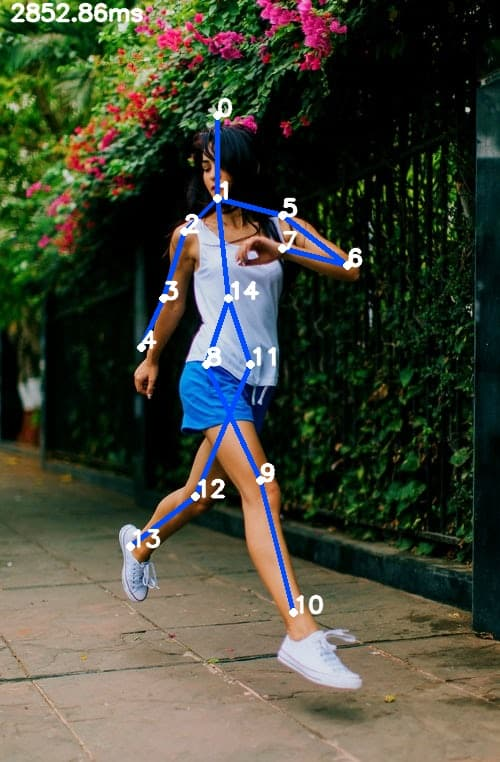
results of pose estimation run on an image
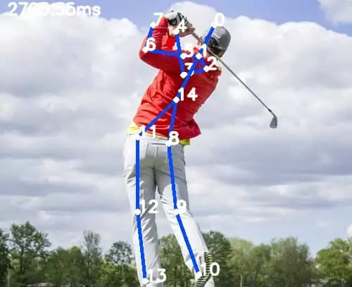
result of pose estimation run on an image
As you can see, this takes approximately 3 seconds on an average MacBook.